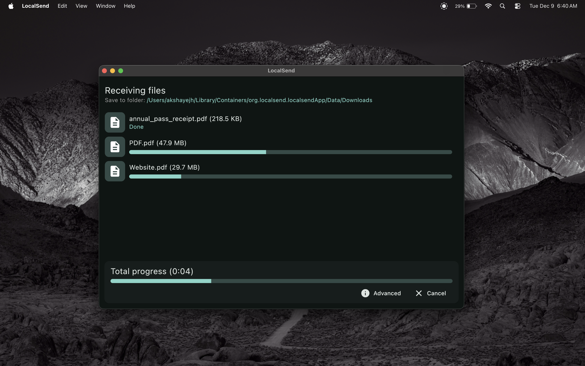
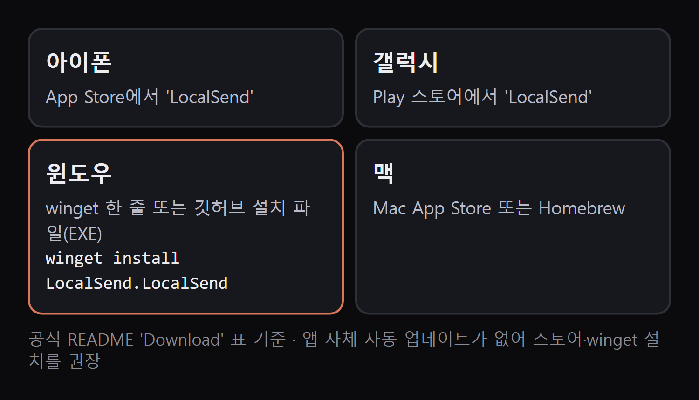
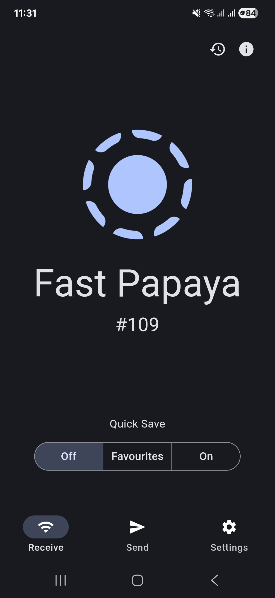
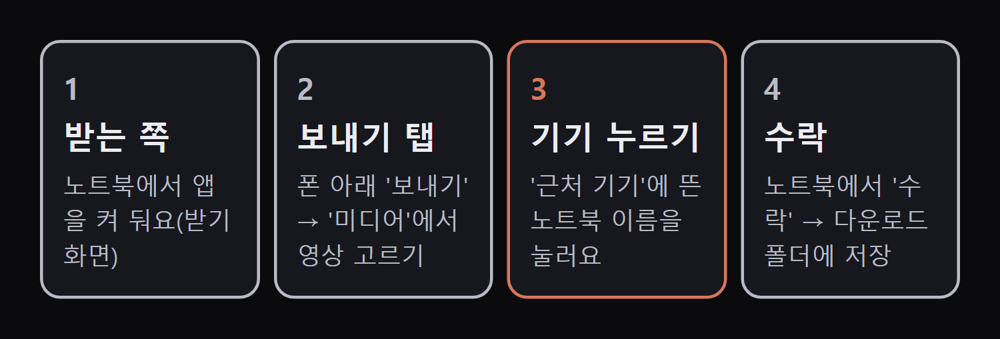
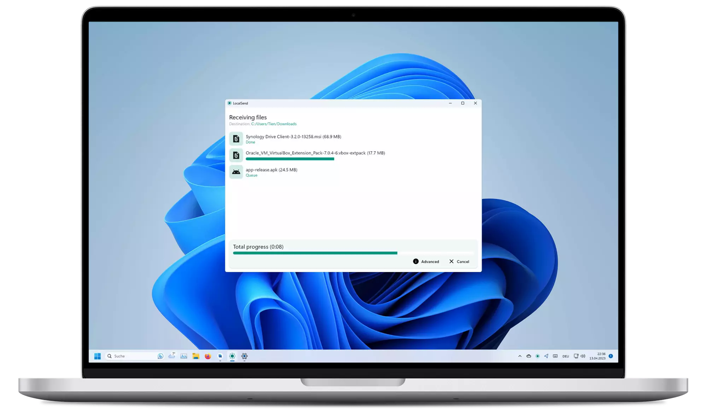
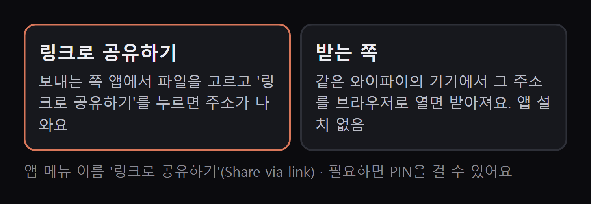

공식 설치 문서 기준. 같은 와이파이에 있는 폰·노트북끼리 사진·영상·파일을 바로 주고받는 무료 오픈소스 앱(Apache-2.0)이에요. 인터넷 서버를 거치지 않고, 가입·로그인·광고가 없어요. 아이폰·갤럭시·윈도우·맥·리눅스 다 돼요.

폰은 앱 스토어에서, 윈도우는 winget 한 줄이나 깃허브 설치 파일로 깔아요. 앱 안에 자동 업데이트가 없어서 공식 문서는 스토어·패키지 관리자 설치를 권해요.

노트북에서 LocalSend를 켜면 '받기' 화면에 이 기기의 이름(예: 'Fast Papaya' 같은 별명)이 떠요. 폰에서는 이 이름을 보고 고르면 돼요. 이름은 설정에서 '내 노트북'처럼 바꿀 수 있어요.

폰 앱 아래 '보내기' → '미디어'에서 영상을 고르고, '근처 기기'에 뜬 노트북 이름을 눌러요. 앨범에서 고른 영상은 원본 파일 그대로 보내져요.

노트북에 받기 요청이 뜨면 '수락'을 눌러요. 기본 저장 위치는 다운로드 폴더예요. 자주 쓰는 기기는 '빠른 저장'을 켜 두면 수락 없이 바로 저장돼요.

상대 기기에 앱이 없으면, 보내는 쪽에서 '링크로 공유하기'를 눌러 나온 주소를 상대가 같은 와이파이에서 브라우저로 열면 돼요.

윈도우 터미널(PowerShell)에 붙여 넣기
winget install LocalSend.LocalSend
Homebrew를 쓰는 맥이면 터미널에
brew install --cask localsend
스토어·winget을 못 쓸 때
https://github.com/localsend/localsend/releases/latest
도움이 되셨다면
@ai.antenna.kr
에서 바로 쓰는 AI 활용법을 계속 올립니다.